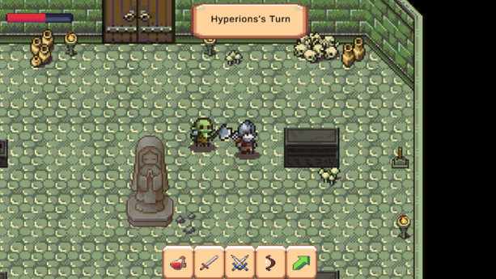
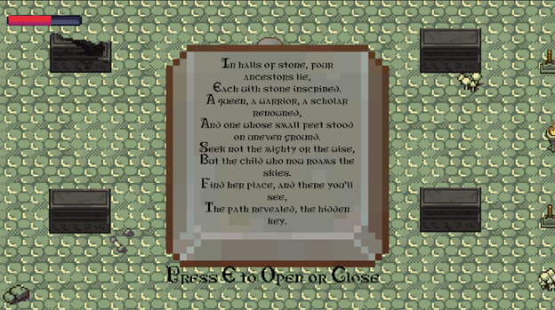

Stone and Sand
Puzzle RPG Prototype
Genre: 2D RPG
Role: Solo Game Designer and Developer
Engine: Unity
Timeframe: 1 month
Overview
Stone and Sand is a 2D RPG that I made as my final project in rapid game development. It integrates turn-based combat with puzzles centered around riddles.
Design Process
Stone and Sand was the final project for my rapid game development class. Since I had three weeks to work on it instead of the usual one, I wanted to push myself further with systems design and puzzle mechanics. My goal was an RPG-style game featuring turn-based combat—I’m a big fan of Divinity: Original Sin 2, especially the way it encourages creative tactics through positioning and environmental interactions. I wanted to go for a system where the player can change the characters' positions instead of the JRPG combat system commonly seen in 2D RPGs.
However, given the time restraints I was under, I also needed to keep things fairly simple and achievable. So, players have two action points per turn and can use either time to move or fight.

But gameplay mechanics were only part of Stone and Sand—I wanted a compelling story to tie everything together. I ended up crafting a narrative about a world built around forgotten myths and riddles, where players unravel the lore piece by piece through exploration and puzzle-solving. The main character is exploring an ancestral tomb after his family has been turned to stone by another powerful rival family. I'd recently revisited Tolkien’s The Hobbit, and the memorable riddling scene between Bilbo and Gollum was still stuck in my mind. I realized riddles could be a great way to let players uncover parts of the story themselves, turning puzzle-solving into storytelling.

However, implementing riddles as a gameplay mechanic wasn't straightforward. Riddles can easily go from fun to solve to incredibly frustrating. To strike the right balance, I spent extra time tweaking the riddles so that they were easier to solve. The goal was for each solved riddle to feel genuinely rewarding and to gradually deepen the player's understanding of the game's lore or simply further the player through the level. Ultimately, combining strategic turn-based combat, thoughtfully designed riddles, and a story rich with mystery allowed me to create a cohesive, engaging experience. My hope was that players would feel genuinely invested, enjoying both the tactical combat and the thrill of uncovering the secrets hidden in the tomb they’re exploring.
Challenges
Turn Based Combat: While this wasn’t my first time designing and programming a turn-based combat system, it was the first time developing one that didn’t have the classic JRPG format. This came with many challenges, mostly with detecting that the player was going into combat and then switching WASD/cursor movement to point-and-click movement.
Play-Testing: Playtesting proved that, at first, the combat was confusing, and the riddles weren’t working out how I’d hoped. I was able to change the UI and make whose turn it is more prevalent by displaying it at the top. Additionally, I simplified the riddles so their solutions were more obvious.